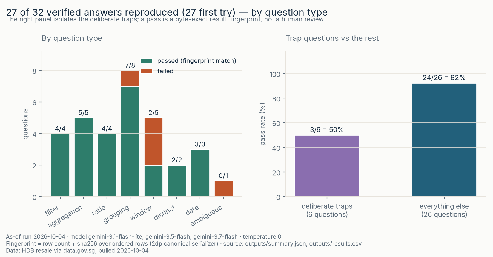
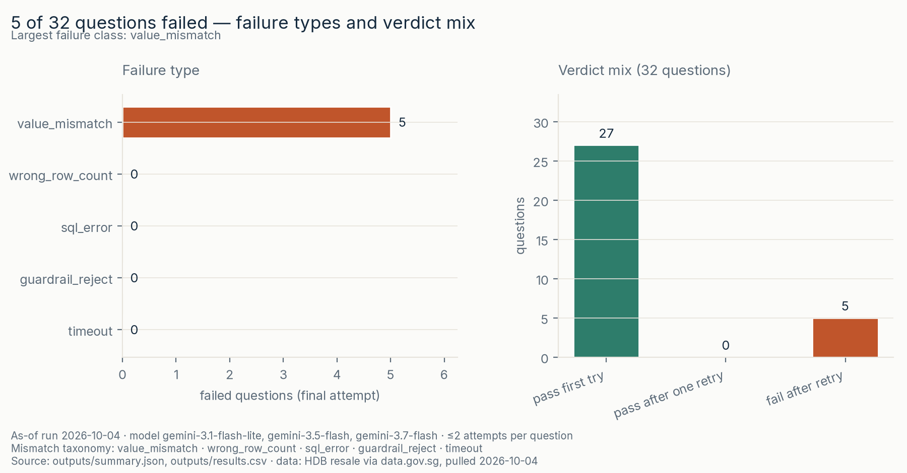

Can an LLM write correct SQL — and how would I know?
HDB resale flat prices via data.gov.sg · 241,920 rows, 2017-01 → 2026-10 · Six-on-SG · 7 of 7
27/32 first try · 0 after one retry · 5 fail — all value_mismatch. On 2026-10-04 a free-tier LLM wrote SQL for 32 hand-written analyst questions. Five results disagreed with pinned references: two semantic errors, two contract slips and one deliberate ambiguity, retries rescued none, and 3 of 6 deliberate traps caught the model. Comparing results with known gold references caught those five errors, but that does not prove the workflow can check new questions without gold answers. I would propose a supervised feasibility pilot, not adoption or production use.
value_mismatch, row counts right on all 32; no sql_error, no guardrail_reject, no timeout. The retry saw the failed SQL plus an error class, never the expected numbersblock (196 instead of 295), Q15 ROWS 2 PRECEDING over a series with 14 missing months, Q24 the ambiguous "last year"; the other three traps were answered right first tryDecimal — no DuckDB, no repo code
The failure view

guardrail_rejects means the prompt or schema changed. Full write-up in the failure catalogue.Decision implications: proposed feasibility pilot
- Start narrow. Use recurring single-table tasks with independent reference checks. Clarify ambiguous questions before SQL, including grain, dates and rounding. Without a reliable reference oracle, verify manually from source data before using the answer.
- Keep an analyst accountable. Review the question, SQL and result before use. No unattended external reporting or business decisions. Review privacy and provider terms before using private data, because this public-data run gives no permission to send private schemas, prompts or rows.
- Measure the whole job. Compare manual versus assisted time to a validated answer, including verification, corrections, setup, reference maintenance and reviewer effort. Independently check held-out tasks for material errors escaping review. No savings or deployment readiness was measured, and this small, selected, mixed-model result is not generalizable.
- Set the gate before starting. Predefine task-specific acceptance criteria with the analyst and business owner, based on error consequences and total effort rather than an arbitrary pass-rate target. Hold or stop the pilot if reliable independent verification is unavailable or a material error escapes review. Any adoption decision remains separate.
See the decision memo for the proposed checks and decision gate.
What this cannot say
- Not a benchmark, not a model ranking. 32 questions on one table from one prompt template is a validation demo; the as-of run spans three closely related free-tier model ids because of a daily quota wall (model note). Treat the aggregate as a workflow receipt, not a model measurement.
- Not a claim that 27/32 is "good". The set is small and hand-written; the five failures are concentrated exactly where unverified SQL is most dangerous (windows, ambiguity). A different 32 questions would give a different number — the number is dated, the failure classes are the durable part.
- Not proof the guardrails are sufficient. They reject the obvious escapes and are tested for those; the row cap and watchdog bound damage, they do not eliminate it.
- Not a statement about multi-table work. One table on purpose: joins, schema evolution, dialect portability and explanation quality are unmeasured.
- Not causal or predictive. The underlying data is transaction records; nothing here prices, forecasts or attributes anything.
Method
- Golden set — 32 hand-written questions in analyst phrasing across 8 question types, including 6 deliberate traps (a question whose obvious SQL is subtly wrong); canonical SQL with a deterministic
ORDER BYwhere the result has multiple rows, plus a result fingerprint. eval/golden_set.yaml - Fingerprint — one canonical result formatter shared by the golden set and the comparison: every cell to 2 dp, rows joined in order, sha256 over the ordered result. Row count + hash, nothing else. src/fingerprint.py
- Generate — one prompt template = question text + schema block, no rows; ≤2 attempts per question, attempt 2 sees attempt 1's SQL and a fixed result-contract message, never expected numbers. Re-runs land in
outputs/reruns/<date>/and never overwrite the committed receipt. src/generate.py - Guardrails — every candidate executes under a trust boundary: parse-based single-SELECT check, table allowlist, no filesystem/catalog functions, read-only connection, 15 s watchdog, 10,000-row cap. src/guardrails.py
- Validate + catalogue + audit — golden fingerprints re-derived from the live database first (a moved input fails loudly), then every committed candidate replayed; every failure classified with a next-iteration fix; 15 verdicts (14 passes + 1 failure) re-derived by hand from the raw CSV. src/validate.py · audit
Reproduce
git clone https://github.com/faizsaifulnizam/ai-analyst-workflow && cd ai-analyst-workflow
uv venv .venv --python 3.12 && source .venv/bin/activate
uv pip install -r requirements.txt
python src/restore_snapshot.py # raw CSV → data/raw/ (gitignored)
python src/build_db.py # 241,920 rows → local DuckDB
python src/generate.py # needs GOOGLE_API_KEY; skips gracefully without it
python src/validate.py # replays the committed candidates
python src/figures.py
python tests/smoke_test.pySpot-check: outputs/results.csv must show Q01 pass_first_try (Tampines 2023 count 1,634), Q05 pass_first_try (2023 4-room median S$550,000), and Q13 fail / value_mismatch. If those three rows read differently, you are not looking at the committed receipt. Full commands (incl. Windows) in the README.
Read more
- The repository — the README carries the full method, rules-and-why table, validation receipts and caveats
- Failure catalogue — every failure classified, with a concrete example and a next-iteration fix
- Independent audit · Data audit · Decision memo
- Model note — the dated LLM receipt and the free-tier quota wall · What never leaves the machine
Data: HDB resale flat prices, Jan 2017 → Oct 2026 (data.gov.sg d_8b84c4ee58e3cfc0ece0d773c8ca6abc, © Housing & Development Board, Singapore Open Data Licence). Pulled 2026-10-04 (16:28:47 +08:00): 241,920 rows, 23,928,760 bytes, 2017-01 → 2026-10, sha256 9835dfe6…db9a (committed pull_manifest.json). The LLM generation receipt is dated 2026-10-04 (three free-tier Gemini model ids, per-question model recorded).